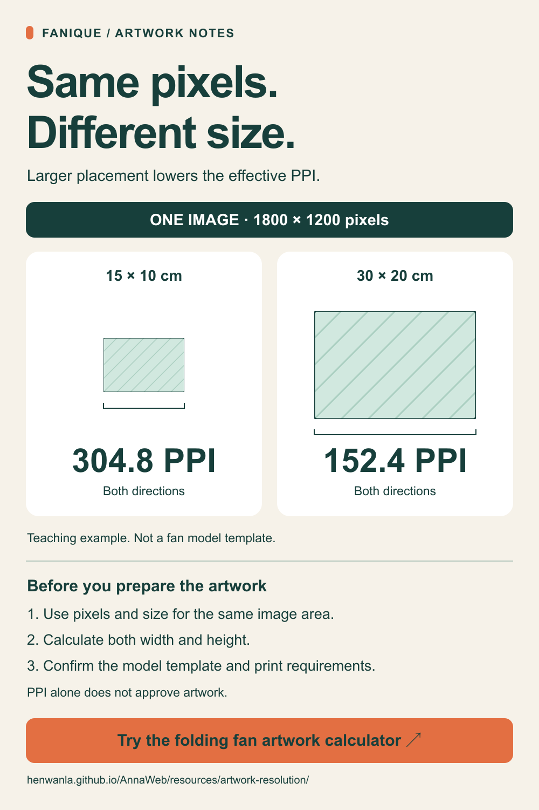

Calculate effective PPI for folding hand fan artwork.
Enter the pixels actually used by a raster image and the size it will occupy in the finished artwork. Calculate effective PPI in both directions. Confirm the actual fan model, template revision and printable area with the supplier; the closed fan length is not automatically the print width.
Image and finished dimensions
Effective resolution
30 × 20 cm
Pixel and placement proportions match.
No agreed target entered; required pixels have not been estimated.
This result describes density only. Source detail, compression, small text and lines, print area, materials, process and sample approval require separate checks.
Calculation scope and formula
Horizontal PPI = horizontal pixels used ÷ final width in inches
Vertical PPI = vertical pixels used ÷ final height in inches
Conversion uses 1 inch = 2.54 cm. Pixels must correspond to the actual used area. Recalculate for the actual image if cropped, rotated, stretched or used only in part.
Changing resolution metadata adds no original pixels. Interpolation does not automatically create original detail. Device DPI and image PPI are different measures.
Match the same image area. If a frame only clips an image without resampling or changing its scale, use the retained source pixels and their final physical size together. Do not divide the full source-image pixel count by a smaller clipped frame width. Display zoom, canvas dimensions and the image area actually used are separate checks.
Fictional horizontal example: 1800 pixels placed across 30 cm gives 152.4 PPI. If a 20 cm portion retains 1200 of those original pixels at the same scale, it still gives 152.4 PPI. Mixing all 1800 pixels with that 20 cm portion would report 228.6 PPI and overstate the density. This assumes no resampling or change of scale; the dimensions are not a fan specification or production approval.
Keep the calculation with your artwork record
Record the pixels, placed dimensions, units and any agreed target used here. Review the supplier's requirements for the selected model and print process, then agree which proof or physical sample is needed before production.
Download the project and delivery worksheets · View Fanique customization information
Ask Fanique about the model and artwork requirements on WhatsApp ↗
This link includes the artwork topic and this page's address. Calculator inputs are not included; you choose what to share and send.

Explain the placed-size calculation to a colleague: download the example card (PNG), edit the SVG, or read the reuse notes.


Reuse of the example card: You may copy, share and adapt the PNG, SVG and notes linked above, including commercial use. A source link is welcome and optional. Permission covers these three original files only, not product or factory photographs, logos, font files or other repository assets. An adapted diagram is not a Fanique model specification or approval.
Same pixels, different size: a 44-second example
A silent visual explanation of the same fictional image at two placed sizes. On-screen text, English captions and a transcript carry the explanation. These are teaching dimensions, not a fan model, printable-area template or approval target.
Watch the placed-size example
PPI describes image density. Confirm the actual model, template revision, printable area, process and sample requirements with the supplier. The clip has no audio track and does not autoplay.
Use it in your own artwork guide: landscape MP4 (1920 × 1080) or portrait MP4 (1080 × 1920). Both run for 44 seconds.
English captions (WebVTT) · English subtitles (SRT) · Text transcript · Poster image

Read the full transcript
- 0–6 seconds: One image. Different placed sizes. A fictional folding hand fan artwork example.
- 6–13 seconds: 1800 by 1200 pixels at 15 by 10 centimetres gives 304.8 PPI in both directions.
- 13–20 seconds: The same 1800 by 1200 pixels at 30 by 20 centimetres gives 152.4 PPI in both directions.
- 20–27 seconds: Double the placed width and height, without adding pixels: PPI halves in both directions.
- 27–35 seconds: PPI is not artwork approval. Match the image area, then confirm the model, template, print requirements and sample.
- 35–44 seconds: Use the calculator for your actual pixels and placed size. These examples are not fan dimensions or approval targets.
Reuse of the video package: You may copy, share and adapt these two original clips, their poster, captions, transcript and reuse note, including commercial use. A source link is welcome and optional. This permission does not cover other repository assets or product/factory photographs, logos, music or font files.
Use the calculator in an artwork guide
You may embed the hosted blank calculator in your own project notes or artwork tutorial. It calculates locally without an image upload. You can remove or replace the optional link to this full guide; a brand link is not required.
View the hosted embed example · Download auto-height HTML · Download fixed-height HTML without a host script
Choose auto-height HTML when your editor permits the iframe and host script. Choose fixed-height HTML when the iframe is permitted but a host script is unavailable: the frame does not grow automatically, so longer content may scroll inside it. Calculation still requires JavaScript inside the tool. If your platform removes iframes, use a normal link to this guide instead; neither snippet changes your platform's permissions.
The auto-height option includes the host page's origin in the tool URL and exchanges only content-height messages, with no article path or calculator inputs. The fixed-height option passes no parent origin. GitHub Pages serves the tool and may keep normal request logs. These snippets do not license the repository's product or factory images for reuse.
Share the artwork calculator
Send the public resource to your designer or procurement colleague. This shares the page link only, without calculator entries or completed worksheet details.